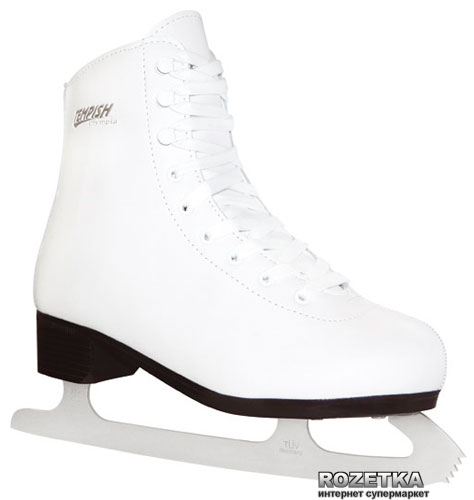

Ковзани фігурні Tempish Olimpia/39 (1300001810/39)

Опис Ковзани фігурні Tempish Olimpia/39 (1300001810/39)
Tempish Olimpia — жіночі фігурні ковзани для аматорського катання і професійного заняття фігурним катанням. Зовнішній матеріал черевика — класичний ПВХ, додає жорсткості зовнішній частині черевика та забезпечує високий ступінь захисту ноги. Внутрішній матеріал черевика — нейлон Velvet, який зберігає тепло у взутті. Анатомічна форма зміцнення в зоні щиколотки та п'яти Memory Optimal Fit дає надійну жорстку фіксацію ноги, у такий спосіб надає їй максимальної стійкості і зручності посадки під час катання. Бандаж всередині черевика забезпечує додаткову фіксацію ноги. Надійне шнурування: гнізда для шнурків посилені металевими клепками, що захищає шнурки від стирання. Для комфорту та швидкості одягання ковзанів передбачені гачки у верхній частині черевика. Лезо: класичне зварне з неіржавкої сталі. Tempish — чеський бренд спортивних товарів. Льодові ковзани Tempish виготовлені за найкращими надійними технологіями згідно з усіма прийнятими нормами безпеки та якості.
Характеристики Ковзани фігурні Tempish Olimpia/39 (1300001810/39)
| Матеріал черевика | Класичний ПВХ |
| Матеріал підкладки | Нейлон Velvet |
| Тип | Ковзани фігурні |
| Розмір | 39 |
| Фіксація черевика | Шнурки |